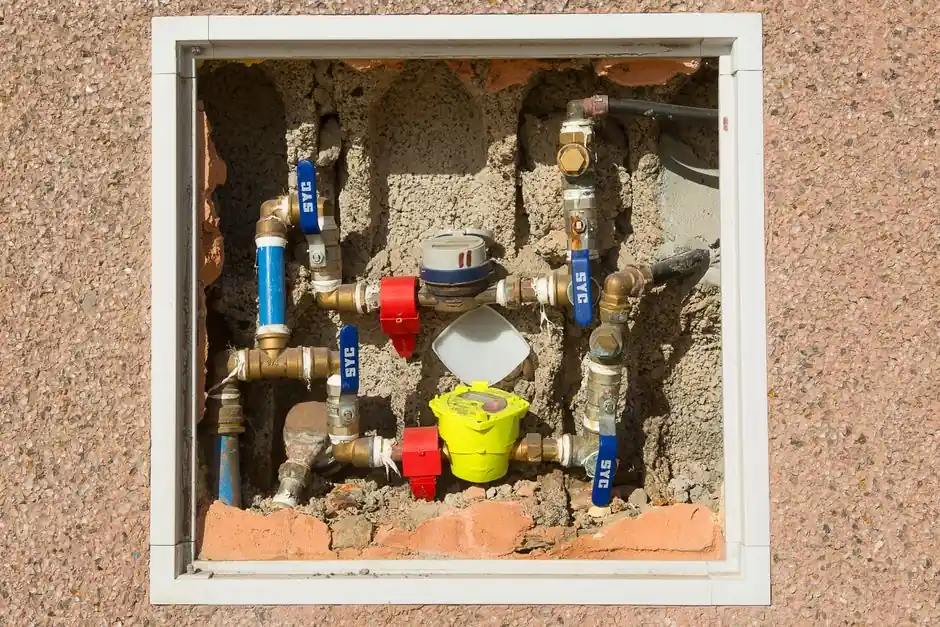

How to thaw frozen pipes before they burst
Frozen pipes don't have to mean a flooded basement. Here's the safe, step-by-step way to thaw them in Arlington Heights - and how to stop it happening again.

Thaw a frozen pipe by shutting off the water, opening the nearest faucet, and warming the pipe gradually with a hair dryer, heat lamp, or wrapped towels soaked in hot water - never with an open flame. Start at the faucet end and work toward the frozen section so melting ice has somewhere to escape. The goal is to restore flow before the ice expands and splits the copper or PEX, which is what actually causes the flood.
We handle frozen pipe calls across Arlington Heights every January and February, and the homes that avoid damage are the ones where someone acted in the first hour. Below is the exact sequence our technicians use, the mistakes that turn a slow drain into a burst pipe, and how to keep it from happening again next winter.
How do you know a pipe is frozen and not just slow?
A frozen water pipe in Arlington Heights usually shows up as one fixture with no flow while the rest of the house runs fine, or a faucet that sputters and stops within a few seconds. If every tap in the house is dead, the blockage is more likely at the main line or meter, not a single interior run.
Check these signs before you assume the worst:
- Frost on the pipe where it runs along an exterior wall, in a crawlspace, or under a kitchen sink on a north-facing wall.
- A bulging or discolored section of pipe - that's ice expanding and a warning sign of an imminent split.
- A faint gurgling or clicking when you open the tap, which is trapped air moving past the ice plug.
- No water at one sink but normal pressure at the shower - classic single-run freeze.
If you see water pooling or a pipe that's already split, stop and treat it as a burst pipe. Turn off the main shutoff and call for emergency Plumbing Arlington Heights IL rather than trying to thaw it yourself.
The safe way to thaw frozen pipes in Arlington Heights IL
Thawing a frozen pipe in Arlington Heights IL is a controlled warm-up, not a race. The pipe needs to go from below 32°F to flowing water without a sudden temperature shock that cracks solder joints or splits PEX fittings.
Step 1: Shut off the main water valve
Find the main shutoff - usually near the meter in the basement, utility closet, or crawlspace - and close it. This limits how much water can escape if the pipe has already cracked and you just haven't seen it yet.
Step 2: Open the nearest faucet
Open both the hot and cold handles on the fixture closest to the frozen section. As the ice melts, that open tap gives the water and steam a place to go instead of building pressure behind the plug.
Step 3: Warm the pipe from the faucet end toward the freeze
Start warming at the end closest to the tap and move slowly toward the frozen section. Use a hair dryer on medium, a portable space heater kept at least 3 feet away, or towels soaked in hot water wrapped around the pipe. A 20-minute session on a typical 1/2-inch copper run is usually enough to restore a trickle, then full flow.
Step 4: Watch for the first trickle
When you see water start to move, keep warming for another few minutes until flow is steady. Then close the faucet, reopen the main valve slowly, and check the pipe for weeping joints or new drips.
If the frozen section is behind a finished wall or under a slab, don't cut into drywall hoping to find it. That's the point where pipe repair Arlington Heights, Illinois from a licensed tech saves you a drywall and insulation bill on top of the plumbing bill.
What never to do when thawing a frozen water pipe
A frozen water pipe in Arlington Heights can be thawed safely in under an hour, but the wrong heat source turns a $200 repair into a $4,000 insurance claim. Skip these entirely:
- No open flame. A propane torch or lighter can ignite insulation, melt PEX, and crack copper solder in seconds.
- No boiling water poured directly on the pipe. Thermal shock splits copper and warps plastic fittings.
- No space heater left unattended. Keep it 3 feet from anything combustible and never leave it running overnight.
- No hammering or prying. Ice is brittle; the pipe underneath is not.
- No running the furnace hotter than normal. Raising the whole house to 85°F won't reach a pipe inside an exterior wall and stresses the system.
If you can't reach the frozen section safely or the pipe is inside a wall cavity, stop. Our team handles Plumbing repairs Arlington Heights, Illinois with the right tools to thaw without opening the wall unless it's necessary.
How to prevent frozen pipes in Arlington Heights, Illinois
Preventing frozen pipes in Arlington Heights, Illinois comes down to keeping the pipes above 32°F and keeping the heat where it belongs. Most of the homes we see with repeat freezes were built before 1980, when exterior-wall plumbing and uninsulated crawlspaces were common.
Do these before the first hard freeze in late November or early December:
- Disconnect garden hoses and shut off exterior spigots. A connected hose traps water in the sillcock and splits it on the first 20°F night.
- Insulate exposed pipes in the basement, crawlspace, attic, and garage with foam sleeves - a $15 fix that prevents a $500 repair.
- Seal gaps around pipes where they pass through exterior walls with expanding foam or caulk. Cold air moving through a 1/4-inch gap is enough to freeze a line.
- Keep the thermostat at 55°F or higher day and night, even when you're away. A furnace setback to 45°F is the single most common cause of a frozen pipe we see.
- Open cabinet doors under kitchen and bathroom sinks on exterior walls during single-digit cold snaps so warm room air reaches the pipes.
- Let a pencil-thin stream drip from the farthest faucet overnight when the forecast drops below 10°F. Moving water freezes far more slowly than standing water.
If your home has a history of freezing in the same spot every winter, the real fix is often rerouting or replacing that run. We handle repiping Arlington Heights, Illinois for homes where insulation alone won't solve it.
What to do if a pipe bursts before you finish thawing
A burst pipe in Arlington Heights, Illinois needs three things in order: water off, power off, and a plumber on the way. The order matters because water plus electricity in a basement is a shock hazard.
- Close the main shutoff immediately. If you can't find it, call us and we'll walk you to it.
- Kill power to any flooded area at the breaker panel - but only if you can reach it without standing in water.
- Open a low faucet to drain remaining pressure from the line.
- Move valuables and start extracting water with towels, a wet/dry vac, or a sump pump if the basement is taking on water.
- Call for frozen pipe burst repair Arlington Heights, Illinois - the sooner a tech is on site, the less structural drying you'll pay for.
Burst pipe prevention Arlington Heights homeowners can count on starts with knowing where the main valve is before you need it. Walk your basement or utility room this week and tag it with a piece of tape.
When to call a professional
Call a licensed plumber when the frozen section is inside a wall, under a slab, or in a crawlspace you can't safely reach - or when you've thawed for 45 minutes and still have no flow. Those are the cases where a $150 service call beats a $3,000 water-damage repair every time.
At Five Star Plumber LLC, we thaw frozen lines, find the split, and repair or replace the damaged section in one visit. We're a state-licensed plumbing contractor serving Arlington Heights and the surrounding northwest suburbs, and we quote the price before we start so there are no surprises on the invoice.
If you're not sure whether you're dealing with a freeze or a failed valve, our leak detection Arlington Heights, Illinois service pinpoints the problem without tearing into walls.
Frequently Asked Questions
How do I thaw frozen pipes in Arlington Heights IL?
Shut off the main water valve, open the nearest faucet, and warm the pipe gradually with a hair dryer or hot towels, starting at the faucet end and working toward the freeze. Most 1/2-inch runs thaw in 20-40 minutes. Never use a torch or boiling water.
How do I prevent pipes from freezing in Arlington Heights, Illinois?
Keep the thermostat at 55°F or higher, insulate exposed pipes in crawlspaces and along exterior walls, disconnect garden hoses, seal gaps where pipes pass through siding, and let a thin stream drip from the farthest faucet when overnight temps drop below 10°F.
What should I do if a pipe bursts in Arlington Heights IL?
Close the main shutoff first, then cut power to any flooded area at the breaker if you can reach it safely. Open a low faucet to drain pressure, start extracting water, and call a licensed plumber right away - every hour of standing water raises the drying and repair cost.
Can a plumber thaw frozen pipes in Arlington Heights?
Yes. Licensed plumbers use pipe-thawing machines and heat blankets that safely warm lines inside walls and crawlspaces without cutting drywall. A typical thaw-and-inspect visit runs 1-2 hours, and we repair any split section the same day.
How much does frozen pipe repair cost in Arlington Heights in 2026?
Typical 2026 pricing in this area runs $150-$350 for a straightforward thaw and inspection, and $400-$1,200 for repairing a split copper or PEX section, depending on access. Burst-pipe water damage repair is a separate cost that climbs fast, which is why we recommend calling at the first sign of no flow.
Get help with Plumbing in Arlington Heights
If a pipe is frozen right now, don't wait for it to split - call us and we'll walk you through shutting off the water while a tech heads your way. Five Star Plumber LLC handles frozen pipe thawing, burst pipe repair, and winterization across Arlington Heights and the surrounding suburbs.
Call (224) 643-9856 for same-day frozen pipe help.